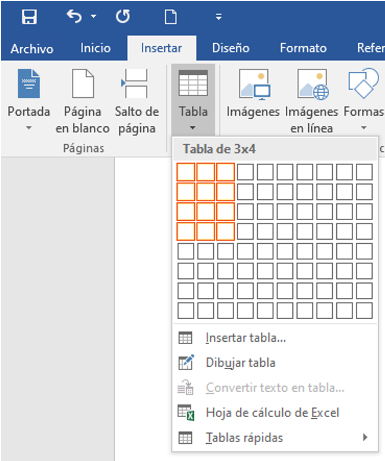
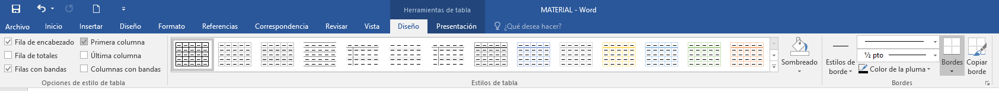
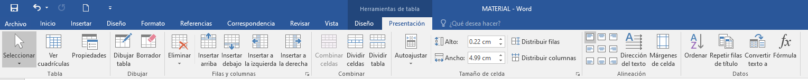
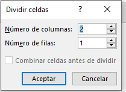
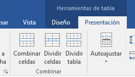
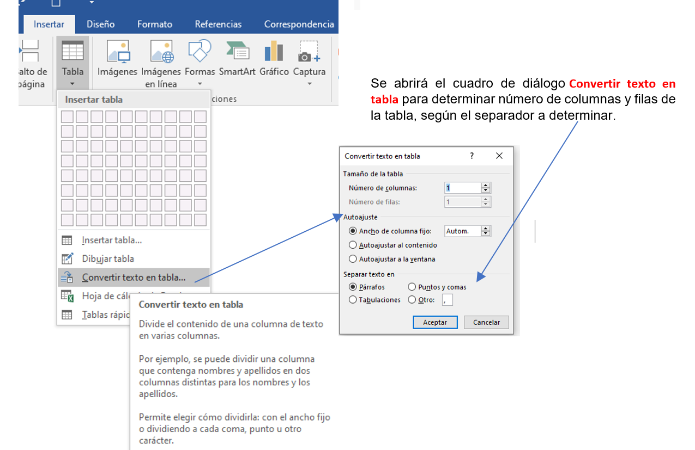

CREAR TABLAS
Tienen disponibles tres posibles formas de crear tablas:
1. Utilizar la cuadrícula que simula una tabla. Cada cuadrado identifica una celda y al pasar el ratón sobre ella se coloreará en naranja la selección que realicemos. Al hacer clic confirmamos que la selección se ha realizado y se inserta la tabla en el documento.
2. Una segunda opción es haciendo clic en Insertar Tabla. Se abre una ventana que permite especificar el número de filas y columnas para la tabla.
3. Otra posibilidad que tienen es usar el vínculo Dibujar Tabla. El cursor tomará forma de lápiz y simplemente iremos dibujando las líneas que la formarán. Esta opción es más lenta, pero puede resultar muy útil para crear tablas irregulares o para retocar tablas ya existentes.

.
SELECCIONAR PARTES DE UNA TABLA
Para una celda colocar el cursor justo encima del lado izquierdo de celda, y cuando el cursor tome la forma de una pequeña flecha negra inclinada hacer clic y la celda se coloreará.

Para una fila hacer lo mismo que para seleccionar una celda, pero haciendo doble clic o también colocando el cursor a la izquierda de la fila y haciendo clic.

.
.
Para una columna colocar el cursor justo encima de la columna, y cuando el cursor tome la forma de una pequeña flecha negra que apunta hacia abajo hacer clic y la columna se coloreará.
Otra forma es seleccionar un conjunto de celdas, filas o columnas haciendo clic dentro de una celda y arrastrando a lo largo de las celdas que queramos seleccionar.

.
DAR FORMATO A TABLAS
Cuando nos situamos en una tabla, disponemos de dos pestañas de Herramientas de tabla, una de ellas DISEÑO.

Esta pestaña contiene herramientas que les permitirá aplicar con un sólo clic, estilos predefinidos del Grupo ESTILOS DE TABLA. Al pasar el cursor sobre ellos se cambia el formato de la tabla. Para aplicarlo definitivamente deben dar clic sobre él. Si desean retocar las tablas o determinar totalmente un formato específico para algunas celdas seleccionadas, podrán hacerlo por medio de las opciones localizadas en los grupos BORDES Y SOMBREADO, que permiten elegir el estilo, grosor y color del borde, así como determinar si se elimina el borde de la celda.
Otra de las pestañas para Tablas es PRESENTACIÓN, que les permitirá hacer ajustes como insertar o borrar filas y columnas, cambiar el ancho y alto, la alineación del contenido de las celdas con respecto a éstas. Así como opciones para dibujar libremente algunas partes de la tabla.

En ocasiones es necesario combinar celdas, de forma que, por ejemplo, una fila contenga una única celda que ocupe lo mismo que las del resto de filas. O bien, que una celda se divida en dos o más celdas sin afectar al resto.
Para unir celdas, debemos indicar mediante selección de celdas cuáles queremos combinar. El botón Combinar celdas sólo estará activo si hay más de una celda seleccionada en la tabla.
El botón Dividir celdas mostrará una ventana donde especificar en cuántas secciones dividir la celda seleccionada.


Una vez creada la tabla, se puede introducir contenido en ella, de forma similar a introducir texto fuera de una tabla: poner texto en negrita, cambiar el tamaño, incluir párrafos, alinear de varias formas, igual que se hace normalmente. Además de texto, las celdas admiten otro tipo de contenido, como imágenes o formas.
Con el botón Dirección del texto, permite que el texto aparezca en la dirección que señalen las flechas, que por defecto será horizontal hacia la derecha (dirección de lectura occidental).
.
.
MOVER LIBREMENTE UNA TABLA
Al pasar el ratón sobre la superficie de la tabla, aparece un icono  en la esquina superior izquierda. Si hacen clic en él y lo arrastran podrán mover libremente la tabla a otro lugar del documento. También pueden cortar la tabla (Ctrl + X) y pegar en otra página (Ctrl + V).
en la esquina superior izquierda. Si hacen clic en él y lo arrastran podrán mover libremente la tabla a otro lugar del documento. También pueden cortar la tabla (Ctrl + X) y pegar en otra página (Ctrl + V).
.
.
CONVERTIR TEXTO EN TABLA
Para poder hacerlo es necesario que el texto tenga cierta estructura: mediante tabulaciones o con los datos separados mediante algún tipo de carácter separador. Una vez seleccionado el texto, elegimos la opción Convertir texto en tabla del menú que se despliega para la creación de tablas.
